254
UNIDADE 8 - CAPÍTULO 1
UNIDADE 8 - Triângulos e quadriláteros
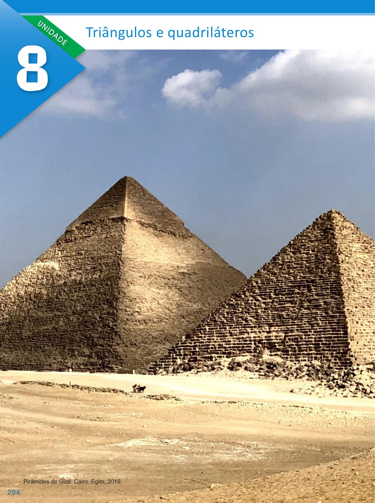255
UNIDADE 8 - CAPÍTULO 1
A Grande Pirâmide é a maior das três pirâmides situadas no deserto, em Gizé, nas proximidades da cidade do Cairo, no Egito. Construída por volta de 2 600 a.C. para abrigar o corpo do faraó Khufu (Quéops). As duas outras menores, em Gizé, foram construídas como túmulos de Khafre (Quéfren) e Menkaure (Miquerinos). A Grande Pirâmide é considerada uma das Sete Maravilhas do Mundo Antigo.
CONVERSE
1. As faces das pirâmides são formadas por polígonos. Ao observar as imagens, quais são os polígonos que compõem as faces laterais e a base da pirâmide?
2. Em quais outras situações do cotidiano podemos observar essas formas geométricas?
256
UNIDADE 8 - CAPÍTULO 1
CAPÍTULO 1 - Triângulos
Sabendo que o triângulo é um polígono de três lados, veja agora a representação de um triângulo e os seus elementos:
► \(\overline{AB}\), \(\overline{BC}\) e \(\overline{AC}\) são os lados do triângulo;
► A, B e C são os vértices;
► a, b e c são os ângulos internos.
Indicamos o triângulo ABC por ΔABC.
Por ser a única forma geométrica que apresenta rigidez, ou seja, não se deforma, o triângulo é muito utilizado na formação de estruturas em diversas construções. Veja a seguir dois exemplos.
1. Podemos verificar a rigidez dos triângulos por meio de um experimento. Com um colega, façam o experimento a seguir.
Materiais
► 7 palitos de churrasco
► Fita adesiva
Procedimentos
► Selecionem três palitos.
257
UNIDADE 8 - CAPÍTULO 1
► Unam as extremidades dos palitos utilizando a fita adesiva.
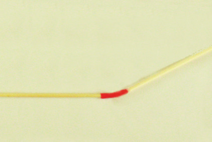► Um triângulo foi formado.
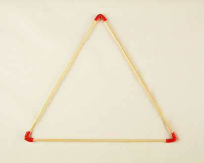► Repitam o procedimento com quatro palitos para formar um quadrado.
Com quatro palitos...
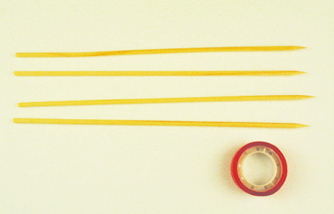... formamos um quadrado.
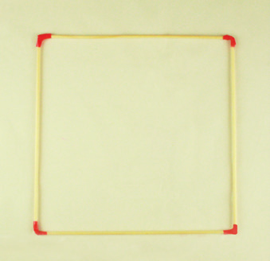a) Tentem deformar o triângulo. O que aconteceu?
b) Tentem deformar o quadrado. O que aconteceu?
Como vocês perceberam, conseguimos deformar o quadrado, o que não aconteceu com o triângulo. Essa deformação ocorre também com qualquer outro polígono com mais de quatro lados.
258
UNIDADE 8 - CAPÍTULO 1
Condição de existência de um triângulo
Será que podemos construir um triângulo utilizando qualquer medida para os seus lados? Vamos fazer um teste?
1. Com a ajuda do seu colega, peguem varetas de churrasco e cortem as varetas com as seguintes medidas:
a) Utilizando os palitos que medem 3 cm, 4 cm e 5 cm é possível construir um triângulo?
b) Utilizando os palitos que medem 3 cm, 4 cm e 8 cm é possível construir um triângulo?
c) Utilizando os palitos que medem 4 cm, 5 cm e 8 cm é possível construir um triângulo?
d) Utilizando os palitos que medem 4 cm, 5 cm e 9 cm é possível construir um triângulo?
e) Quando vamos construir um triângulo, podemos utilizar qualquer medida para seus lados?
Por meio desse experimento, percebe-se que nem sempre é possível construir um triângulo conhecendo-se as medidas dos segmentos.
Para que possamos construir um triângulo, a medida de um lado deve ser menor que a soma das medidas dos outros dois lados. Observe:
► No caso em que os palitos medem 3 cm, 4 cm e 5 cm é possível construir o triângulo porque 5 < 3 + 4, 4 < 3 + 5 e 3 < 4 + 5.
259
UNIDADE 8 - CAPÍTULO 1
► Já na situação em que os palitos medem 3 cm, 4 cm e 8 cm temos que 8 > 3 + 4, por isso não foi possível construir o triângulo.
► No caso em que os lados medem 4 cm, 5 cm e 8 cm é possível construir o triângulo porque 8 < 4 + 5, 5 < 4 + 8 e 4 < 5 + 8.
► Já na situação em que os palitos medem 4 cm, 5 cm e 9 cm temos que 9 = 4 + 5, por isso não foi possível construir o triângulo.
Portanto, para que um triângulo possa ser construído:
A medida do lado de um triângulo qualquer deve ser menor que a soma das medidas dos outros dois lados. Esta é a condição de existência de um triângulo.
Construção de triângulos utilizando régua e compasso
Vamos construir um triângulo ABC cujos lados medem 3 cm, 4 cm e 5 cm com o auxílio de um compasso. Vejamos:
1.° Com uma régua, desenhe em seu caderno, \(\overline{AB}\) medindo 5 cm. Este segmento será a base do triângulo.
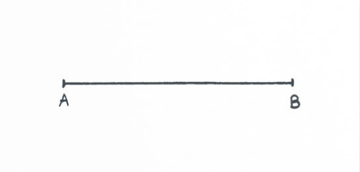2.° A partir do ponto A, com o auxílio de um compasso com abertura medindo 4 cm, marque um arco.
260
UNIDADE 8 - CAPÍTULO 1
3.° Usando o compasso com abertura de 3 cm, coloque a ponta-seca no ponto B e trace outro arco, intersectando o arco anterior. O ponto de intersecção será o ponto C.
 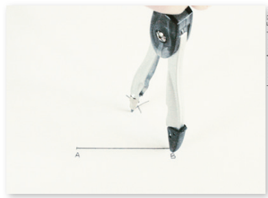
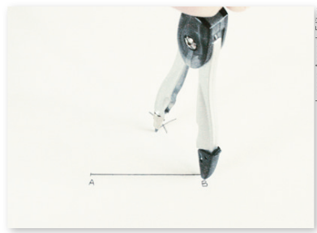
4.° Trace os segmentos \(\overline{AC}\) e \(\overline{BC}\) .
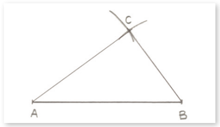Note que com essas medidas foi possível construir o triângulo ABC.
Agora vamos tentar construir um triângulo DEF, utilizando o compasso, cujos lados medem 8 cm, 4 cm e 3 cm.
1.° Trace \(\overline{DE}\) com 8 cm, como base do triângulo.
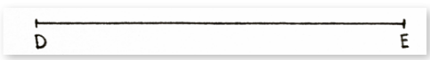2.° Em seguida, utilizando o compasso com abertura igual a 4 cm, coloque a ponta-seca em D e trace um arco.
261
UNIDADE 8 - CAPÍTULO 1
3.° Com a ponta-seca do compasso em e abertura igual a 3 cm, trace outro arco.
4.° Note que não houve intersecção dos arcos traçados. Neste caso, não é possível construir um triângulo com essas medidas.
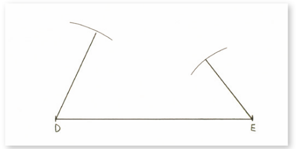Vamos verificar agora como podemos descrever por meio de um fluxograma a construção de um triângulo qualquer, conhecendo as medidas dos seus lados. Como exemplo, usaremos o triângulo ABC cujos lados medem 3 cm, 4 cm e 5 cm.
![Fluxograma de processo com uma tomada de decisão. O processo se inicia com o “Traçar o lado com maior medida”, segue na vertical com uma seta para a etapa “A partir do lado traçado, traçar os arcos com medida dos raios igual a medida dos demais lados”. Outra seta leva à pergunta, dentro de um losango, “Os arcos se cruzam?”. Do losango partem duas setas, para a esquerda e para a direita. À esquerda a opção “Sim”, leva à etapa “O triângulo existe”, da qual sai uma seta para a etapa “Descobrimos”. À direita do losango, a opção “Não”, leva à etapa “O triângulo não existe”, da qual sai uma seta para a etapa “Descobrimos”. Fim do processo para as duas decisões.](../../resources/images/unidade8/capitulo1/imagem23.png)
262
UNIDADE 8 - CAPÍTULO 1
Classificação dos triângulos
Conforme estudado, os triângulos podem ser classificados de acordo com as medidas de seus lados e as medidas de seus ângulos internos. Vamos relembrá-las?
Classificação quanto às medidas dos lados
► Triângulo equilátero
Apresenta os três lados congruentes (mesma medida).
O ∆ABC (ao lado) é equilátero, pois \(\overline{AB}\) ≡ \(\overline{BC}\) ≡ \(\overline{AC}\).
► Triângulo isósceles
Apresenta dois lados congruentes.
O ∆DEF (ao lado) é isósceles, pois \(\overline{DE}\) ≡ \(\overline{DF}\).
O lado não congruente chama-se base.
► Triângulo escaleno
Apresenta os três lados com medidas diferentes.
O ∆GHI (ao lado) é escaleno.
Agora, vamos relembrar a outra classificação.
Classificação quanto às medidas dos ângulos internos
► Triângulo acutângulo
Tem os três ângulos internos agudos.
O ∆ABC (ao lado) é acutângulo,
pois a < 90º, b < 90º e c < 90º.
► Triângulo obtusângulo
Tem um ângulo interno obtuso e dois ângulos agudos.
O ∆MNO (ao lado) é obtusângulo, pois 90º < b < 180º.
► Triângulo retângulo
Tem um ângulo interno reto e dois ângulos agudos.
O ∆RST (ao lado) é retângulo, pois b = 90º.
263
UNIDADE 8 - CAPÍTULO 1
ENCONTRE SOLUÇÕES
1. Com o auxílio de régua e compasso, tente construir, em seu caderno, um triângulo cujas medidas dos lados sejam:
a) 5 cm, 4,5 cm e 6 cm;
b) 7,5 cm, 6,5 cm e 6,5 cm;
c) 7 cm, 3,5 cm e 3,5 cm;
d) 9 cm, 5 cm e 3 cm.
2. Sabendo que as medidas dos lados de um triângulo isósceles são 7 cm e 4 cm, quais os possíveis valores para a medida do terceiro lado?
3. Calcule, no caderno, o perímetro de um triângulo isósceles que tem um dos lados medindo 7 cm e outro lado medindo 3 cm.
4. Em um triângulo DEF, DE = 10 cm e DF = 8 cm. Quais os possíveis valores para a medida do lado EF , sabendo que o maior lado é EF e que sua medida é um número inteiro?
5. Com três segmentos de reta, cada um medindo 12 cm, é possível construir um triângulo?
6. Sabe-se que dois lados de um triângulo medem 5 cm e 8 cm e que o comprimento do terceiro lado, em cm, é um número inteiro. Se a medida do terceiro lado é o maior número inteiro possível, qual é a medida desse lado?
7. Utilizando uma régua e um transferidor, em seu caderno, classifique os triângulos abaixo quanto às medidas dos lados e dos ângulos internos.
a)
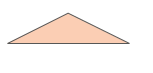b)
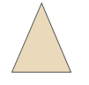c)
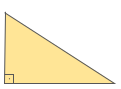d)
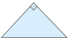e)
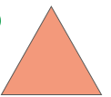8. Quais as alternativas que representam as medidas dos lados de um triângulo? Justifique sua resposta.
a) 3 cm, 4 cm e 9 cm;
b) 4 cm, 10 cm e 7 cm;
c) 12 cm, 8 cm e 3 cm;
d) 11 cm, 12 cm e 14 cm;
e) 5 cm, 7 cm e 1 cm.
9. Um triângulo isósceles tem o lado não congruente medindo 12,3 cm. Qual é a medida dos outros dois lados, sabendo que o perímetro desse triângulo é de 29,7 cm?
10. Um triângulo equilátero tem 11,1 cm de perímetro. Qual é a medida do lado desse triângulo?
Soma das medidas dos ângulos internos de um triângulo
Vamos fazer um experimento para descobrirmos a soma das medidas dos ângulos internos de um triângulo?
1.° Desenhe, em uma folha de papel sulfite, um triângulo qualquer e destaque com cores diferentes os seus ângulos internos.
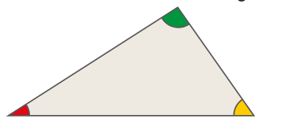264
UNIDADE 8 - CAPÍTULO 1
2.° Agora, recorte o triângulo em três partes.
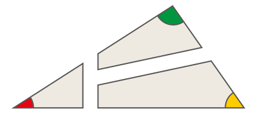Perceba que cada uma dessas partes tem um ângulo interno do triângulo original.
3.° Junte esses três ângulos internos, de modo que os três vértices coincidam.
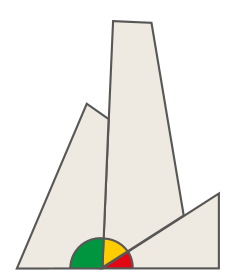Note que eles formam um ângulo de 180º.
Em um triângulo qualquer, a soma das medidas dos ângulos internos é sempre igual a 180º.
Como exemplo, vamos verificar as medidas dos ângulos internos BÂC e ABC, sendo med(C) = 90º.
Assim:
x + 2x + 90º = 180º
3x = 180º − 90º
3x = 90º
\(\dfrac{90°}{3}\)
x = 30º
med(BÂC) = 2 ∙ x = 2 ∙ 30º = 60º
med(ABC) = 30º
As medidas dos ângulos internos do triângulo são 30º, 60º e 90º.
265
UNIDADE 8 - CAPÍTULO 1
ENCONTRE SOLUÇÕES
1. Num triângulo retângulo, dois dos ângulos internos têm a mesma medida. Qual é a medida de cada ângulo interno?
2. Observe os triângulos a seguir e, em seu caderno, determine o valor de x.
a)
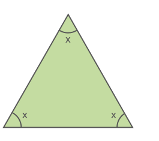b)
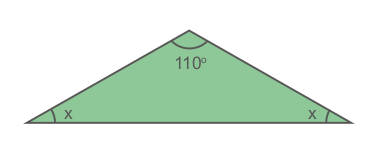c)
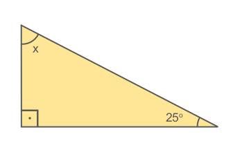d)
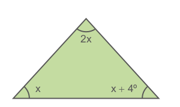3. Os ângulos internos de um triângulo medem x + 1º, x + 2º e x + 3º. Qual é a medida de cada ângulo interno?
4. Em seu caderno, determine o valor de x em cada triângulo a seguir.
a)
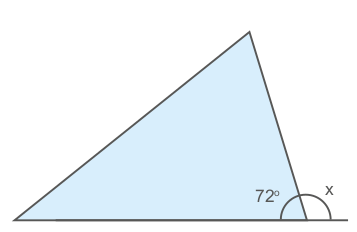b)

c)
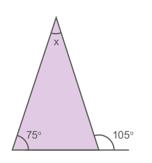d)
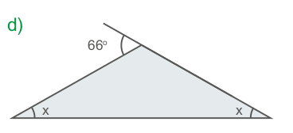5. Num triângulo, os ângulos internos Â, B̂ e Ĉ medem, respectivamente, x, 2x e \(\frac{x}{3}\). Determine a medida do ângulo Ĉ.
266
UNIDADE 8 - CAPÍTULO 1
6. Na figura abaixo, determine os valores de x, y e z.
![Ilustração de um triângulo escaleno amarelo. A reta horizontal é a maior e faz a base da figura, e o lado esquerdo é maior que o direito. O ângulo da base esquerda, é 40º, e o ângulo da base direita, é 60º. Uma reta inclinada para a esquerda e para baixo, sai do vértice superior até encostar na base, demarcando quatro ângulos, dois ângulos no vértice superior e outros dois ângulos na junção da reta inclinada com a base. Marcação dos ângulos: ângulo x, localizado entre o lado esquerdo da reta inclinada com o lado esquerdo da figura; ângulo 50º, localizado entre o lado direito da reta inclinada com o lado direito da figura; ângulo y, localizado entre o lado esquerdo da reta inclinada com a base da figura; ângulo z, localizado entre o lado direito da reta inclinada com a base da figura.](../../resources/images/unidade8/capitulo1/imagem47.png)
7. Observe o triângulo a seguir.
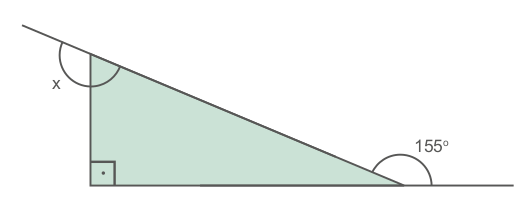Determine o valor de x.
8. Em uma folha de papel, com auxílio de régua e compasso, construa um triângulo ABC isósceles em que os lados congruentes meçam 8 cm e a base 6 cm. Nomeie os vértices e as medidas dos ângulos internos desse triângulo, conforme mostra a figura.
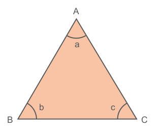Em seguida, trace uma linha que passa pelo vértice A, formando um ângulo de 90º com o lado \(\overline{BC}\).
Dobre o triângulo nesta linha, sobrepondo as duas partes do triângulo e responda, em seu caderno.
a) As duas partes do triângulo são idênticas?
b) Como se chama a linha traçada que passa pelo vértice A?
c) Podemos dizer que os ângulos da base possuem a mesma medida?
9. O triângulo MNP a seguir é isósceles, sendo que \(\overline{MN}\) ≡ \(\overline{MP}\) . Sabendo que med \(N\widehat{M}P\) = 70º, determine a medida dos outros dois ângulos internos desse triângulo.
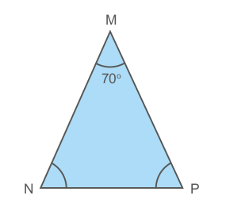10. Determine o valor de m.
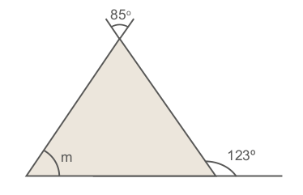